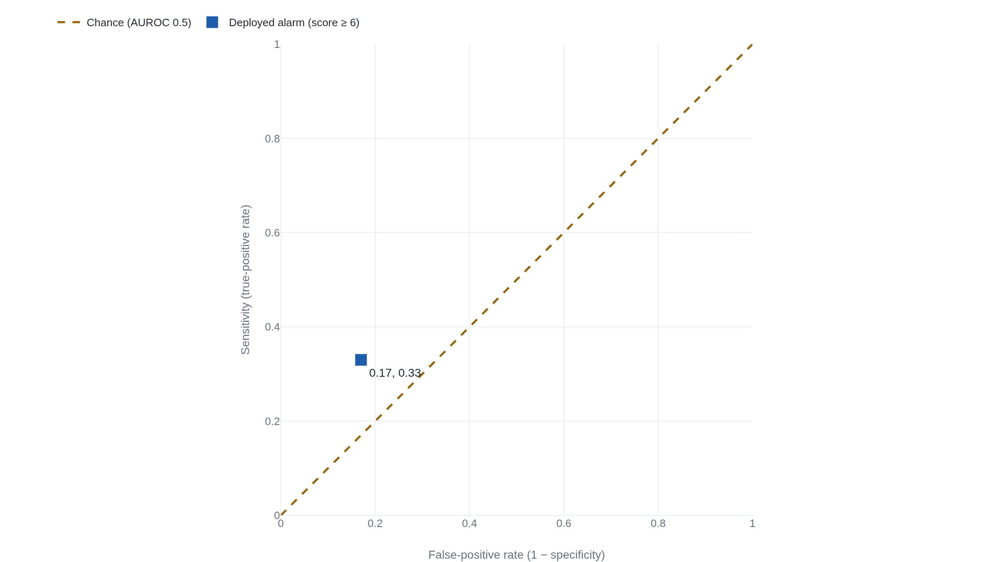

A sepsis model scoring 0.63 AUROC caught one case in three at the threshold hospitals used
The area under the ROC curve scores how often a model ranks a sick patient above a well one, a measure that stays silent on the threshold a hospital sets and on how rare the disease is.
Why this matters
When a model is called accurate, the number behind the word is usually AUROC. It is the single figure between 0.5 and 1.0 that a system earns for sorting cases into two piles: sick or well, fraud or not, sepsis or not. It reaches the public as a grade, and hospitals, banks, and regulators buy tools on the strength of it. This lesson shows what the figure actually counts. It shows why a high one can sit beside a tool that misses most of what it hunts, and how to read the number the next time a model arrives with one.
- 01
- A model that only guesses the base rate scores zero calibration error: the companion lesson on whether a model's stated probabilities are true, which AUROC deliberately ignores.
- 02
- Epic's sepsis alarm missed two-thirds of the patients it was built to catch: the full deployment story behind the figures this lesson borrows to teach the measurement.
What the 0.83 was hiding
Epic Systems sold a sepsis prediction model to hundreds of American hospitals with a reported area under the curve as high as 0.83, a figure the vendor's own reporting produced.1 When a team at Michigan Medicine ran the same model against 38,455 hospital stays and checked its scores against who actually developed sepsis, the area came out at 0.63.1
The area under the curve, written AUROC or AUC or the c-statistic, is the default way to say a classifier works. It is also read as a report card on the whole tool, and it is nothing of the kind. It answers one narrow question, and it answers it well. What it cannot tell you is whether the model's stated probabilities mean anything, how the model behaves at the one alarm setting a hospital actually uses, and what happens when the disease it hunts is rare. Those three gaps are where the 0.83 hid a tool that did not work.
Turning a score into a decision
A binary classifier does not hand back a yes or a no. It hands back a number, a score for how strongly it believes a case belongs to the class it is looking for: this patient will develop sepsis, this transaction is fraud. To act on the score, someone picks a cutoff. A score above the line sounds the alarm. A score below it passes unremarked. Epic's model runs from a low floor to a high ceiling, and the hospitals in the Michigan study set the alarm at a score of 6.1
Where that line falls decides two rates at once. Sensitivity is the share of real cases the alarm catches: of everyone who truly had sepsis, how many scored above the cutoff. Specificity is the share of non-cases it correctly leaves alone: of everyone who was fine, how many stayed below.2 The two work against each other. Lower the cutoff to catch more real cases and the alarm also fires on more healthy people. Raise it to spare the healthy and more real cases slip through untouched. A model does not have one sensitivity and one specificity. It has a different pair at every cutoff it could be set to.
The area is a bet on a random pair
Sweep the cutoff from its highest setting down to its lowest and plot each sensitivity-and-specificity pair as a point. The horizontal axis is the false-positive rate, the share of healthy people wrongly flagged, which is just one minus specificity. The vertical axis is sensitivity.2 The line those points trace as the threshold moves is the receiver operating characteristic curve, the ROC curve. It runs from the bottom left, where the cutoff is so high that nothing is flagged, up to the top right, where it is so low that everything is.
The area under that curve is AUROC, and it measures exactly one thing. Take one patient who truly developed sepsis and one who did not, both drawn at random. The area is the probability that the model gave the sick one the higher score.3 Hanley and McNeil showed in 1982 that this ranking probability is the same quantity as the Wilcoxon rank-sum statistic, which is why the two are names for one number.3 A model that ranks the pair correctly every time scores 1.0. A model that does no better than a coin toss scores 0.5.2
AUROC is one bet. Hand the model a random sick patient and a random well one, and the score is the chance it rates the sick one higher.3 It grades the order of two cases. It says nothing about whether the alarm was right about any single patient.
Same ranking, different world
Because AUROC cares only about the order of scores, three of its blind spots follow directly.
The first is calibration: whether a model's stated probabilities are true, so that cases it calls 70 percent likely happen about 70 percent of the time. Ranking ignores this. Multiply every score by a constant and the order is untouched, so the area holds steady even as the numbers drift away from real frequencies. Calibration is a subject of its own, taught in calibration error. A strong AUROC promises nothing about it.
The second is the threshold. The area averages over every possible cutoff, including ones no hospital would ever choose. The single point a deployment runs at can sit low on the curve while the average across all points stays respectable. AUROC scores the whole curve. A ward lives at one point on it.
The third is how rare the target is, and it is the one that catches people, because the number really does hold still while the world beneath it changes. Saito and Rehmsmeier took one classifier's identical outputs and scored them on a balanced dataset and on an imbalanced one. The ROC curve and its area did not move between the two.2 But precision, the share of alarms that turn out to be real cases, fell from 0.60 to 0.33 as the healthy came to outnumber the sick.2 Precision counts true alarms against all alarms, so as negatives pile up, more of the alarms are false and the fraction sinks, even though the model ranks exactly as well as before. The baseline of a precision-recall curve is the positive rate itself, the count of positives over positives plus negatives, which is why that curve moves with prevalence when the ROC curve will not.2
The lesson people draw from this is often stronger than the evidence. It is tempting to say that under imbalance you should always prefer the area under the precision-recall curve, and for skewed data a precision-recall view does give a more informative picture of a classifier.4 But a 2024 result shows the blanket rule is wrong.5 Preferring that area can favor groups with more frequent positives and widen the gaps between them, and it does not follow automatically from the imbalance. The durable fact is narrower and is not in dispute. AUROC does not move with prevalence. Precision does. A high area can therefore sit right beside a low share of true alarms, which is precisely what a rare disease arranges.
The alarm at score six
Put the three blind spots together and Epic's two numbers stop being a contradiction. The external area of 0.63 sat below the 0.76 to 0.83 the vendor reported,1 a range Epic and University of Colorado Health had put out together.6 But the area was never the thing a patient felt. At the score of 6 the hospitals actually set, the model's sensitivity was 33 percent.1 It missed 1,709 of the 2,552 patients who developed sepsis, close to two in three.1 Of the cases it missed, 1,030 received timely antibiotics anyway, which bounds how much the alarm was adding on its own.1

The false alarms were the other half of the cost. Sepsis was rare in the cohort, about 7 percent of stays, and at a rare positive rate a decent specificity still leaves a flood of false positives.1 This is the imbalance effect, now with a bedside price. The model's positive predictive value, the share of its alarms that were real sepsis, was 12 percent.1 To find one true case, clinicians would have had to work up 8 patients if the alarm sounded once per stay, and 109 if it re-fired each time the score crossed 6 over a four-hour window.1 The alarm went off on 18 percent of all hospitalizations.1
Why would a model that ranks so unremarkably in the field have looked strong in the vendor's own testing? Reporting by STAT News found that the model's inputs included whether a clinician had already ordered antibiotics, an input Epic had not publicly disclosed.7 On retrospective data, knowing that a doctor already suspected sepsis makes the sick easy to rank above the well, and the area rises. At the bedside, where the point is to warn the doctor before the suspicion forms, that signal arrives too late to help, which fits the finding that most of the missed cases were already being treated.1 A second validation, across 145,885 emergency-department encounters at two Texas county hospitals in 2023, measured a sensitivity of 14.7 percent and a median alert lead time of zero minutes, worse than Michigan's and in the same direction.8
The takeaway
AUROC answers one question: how well a model ranks a real case above a non-case. Ask it whether the deployed tool works and it answers something else. It says nothing about whether the model's probabilities are honest, nothing about how the tool behaves at the single threshold someone sets, and nothing about how many alarms are false when the target is rare. That independence from prevalence and threshold is also the reason to keep the number around: it lets you compare two models across hospitals with different sepsis rates without the difference in rates swamping the comparison. The number did its job. The mistake was reading a ranking score as a verdict on a working alarm. Epic's 0.63 was a fair ranking and a poor alarm, and a reader who holds the two apart will not be caught by the next headline that reports only the first.
- 01
- Fawcett, An introduction to ROC analysis: the standard primer on how ROC curves are drawn and what their area means, with the geometry this lesson only sketched.
- 02
- Google's machine-learning crash course on ROC and AUC: a hands-on walkthrough where you drag a threshold across a curve and watch sensitivity and the false-positive rate trade off.
Sources
- JAMA Internal Medicine · Wong et al., External Validation of a Widely Implemented Proprietary Sepsis Prediction Model in Hospitalized Patients (2021)
- PLOS ONE · Saito & Rehmsmeier, The Precision-Recall Plot Is More Informative than the ROC Plot When Evaluating Binary Classifiers on Imbalanced Datasets (2015)
- Radiology · Hanley & McNeil, The Meaning and Use of the Area under a Receiver Operating Characteristic (ROC) Curve (1982)
- ICML · Davis & Goadrich, The Relationship Between Precision-Recall and ROC Curves (2006)
- NeurIPS · McDermott et al., A Closer Look at AUROC and AUPRC under Class Imbalance (2024)
- JAMA Internal Medicine · Habib, Lin & Grant, The Epic Sepsis Model Falls Short—The Importance of External Validation (2021)
- STAT News · Ross, Epic's sepsis algorithm is going off the rails in the real world (2021)
- JAMIA Open · Ostermayer et al., External validation of the Epic sepsis predictive model in 2 county emergency departments (2024)